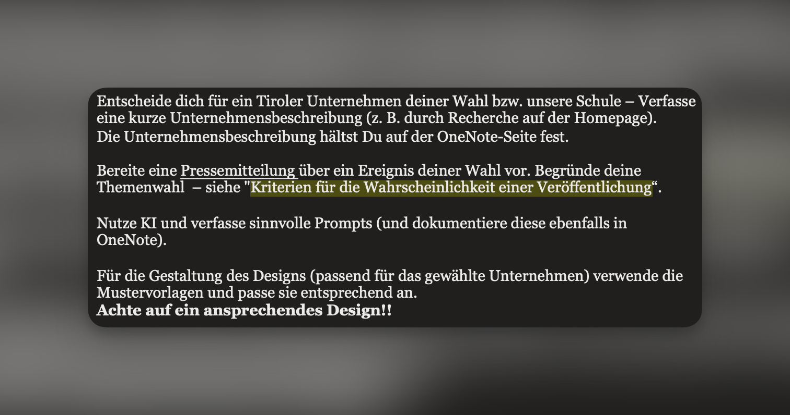
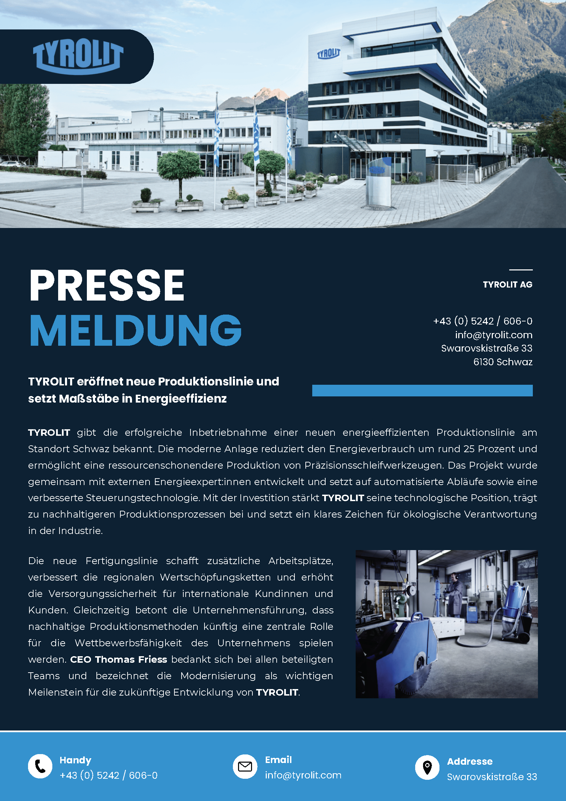

Erstellung einer Pressemitteilung über die Eröffnung einer neuen energieeffizienten Produktionslinie bei TYROLIT AG in Schwaz — mit KI-Unterstützung und passender Gestaltung.
Im Rahmen des Unterrichts in KOEA (Kommunikation & Öffentlichkeitsarbeit) erhielten wir den Auftrag, uns für ein Tiroler Unternehmen zu entscheiden und eine Pressemitteilung über ein selbst gewähltes Ereignis zu verfassen. Ich entschied mich für die TYROLIT AG mit Sitz in Schwaz — ein international tätiges Unternehmen der Swarovski-Gruppe, das Präzisionsschleifwerkzeuge herstellt.
Zunächst wurde eine kurze Unternehmensbeschreibung durch Recherche auf der Homepage erarbeitet und in OneNote festgehalten. Anschließend wurde das Thema der Pressemitteilung gewählt und nach den Kriterien für die Wahrscheinlichkeit einer Veröffentlichung begründet. KI wurde zur Unterstützung beim Verfassen genutzt — alle verwendeten Prompts wurden ebenfalls in OneNote dokumentiert.

Als Thema für die Pressemitteilung wurde die Eröffnung einer neuen energieeffizienten Produktionslinie am Standort Schwaz gewählt. Dieses Ereignis erfüllt mehrere Veröffentlichungskriterien: regionale Relevanz, wirtschaftliche Bedeutung, Nachhaltigkeitsbezug und öffentliches Interesse an Technologieinvestitionen.
Der Text wurde mit Unterstützung von KI verfasst — die Prompts wurden dokumentiert. Das Design der Pressemitteilung orientiert sich am Corporate Design von TYROLIT (Blau-Weiß, klare Typografie) und wurde auf Basis einer Mustervorlage in Canva erstellt.
